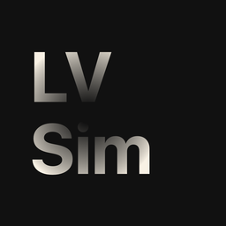

LVSimulator

Check materials for low visionPoint the camera at a worksheet, a board or a room and see an approximation of blur, visual field loss, glare or colour vision deficiency. You will notice what you can improve in your materials.
What the
app does
For teachers, special needs educators and everyone who prepares materials for children and young people with visual impairments.
- 01
Four groups of effects
Blur, visual field, glare and contrast, and colour vision. Every effect has a slider from 0 to 100 percent, and all of them can be combined.
- 02
Five profiles
Macular degeneration, retinitis pigmentosa, cataract, glare sensitivity and red-green deficiency as a starting point, each explained in plain words.
- 03
Compare and pause
Original and simulation side by side with a movable divider. Freeze the image or load a photo from your library, for example a scanned worksheet.
How it
looks

Three
steps
Point the camera
At a worksheet, a board or a room.
Choose an effect
Tap a profile or adjust the sliders yourself.
Improve the material
See where contrast, font size, layout or colours can become clearer.
To be
honest.
The simulation is an approximation. Visual impairments differ from person to person, and the brain compensates for a lot. LV Simulator does not diagnose anything and does not replace an assessment by a specialist.
For iPhone and iPad, in development. Like my other apps, LV Simulator works locally, without internet, AI, ads or usage analytics.
Questions or ideas? Write to me.
support@sichtnah.com